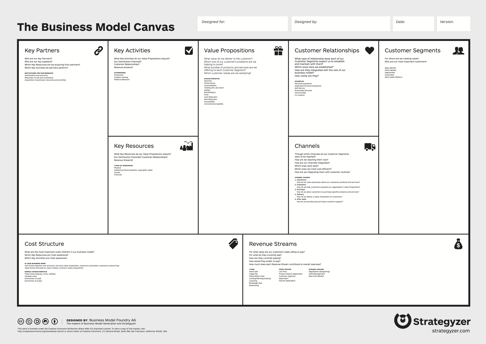

Innovation & Venture Development
- New to startups and business? Start with Unit 0. In about 20 minutes it covers invention vs innovation, what makes a startup different, how startups get money, the acronyms you'll meet, how a business makes money, and how to crack MCQs, using everyday examples.
- Then read each unit's notes (§ I.1–I.7, § II.1–II.9). They follow the professor's own Unit I and Unit II notes and slides, including every name, year, example and case study.
- Revise with the unit's flashcards, then do its question bank (114 questions for Unit I, 136 for Unit II).
- Finish with the 50-question practice paper under a 60-minute timer.
What the paper tests. The mid-sem covers Units I and II only (Units III–IV, on financing and scaling, come later). The professor's own practice MCQs use four styles, and every style appears here: straight recall; "which of the following" combinations with answers like "Only A / A and B / A, B and C"; match the following; and put in order (e.g. the design-thinking stages). His 10 practice MCQs are included word-for-word and tagged From the notes. Tap an option to answer; the explanation says why it is right, the scoreboard keeps your total, and Reset clears it.
Startups from Zero
The basic ideas behind innovation and startups, explained with a college canteen app, plus how to crack an all-MCQ paper.
Not a syllabus unit by itself, but every idea here (invention vs innovation, startup, customer, value proposition, revenue, equity, angel, VC, incubator, accelerator, MVP) appears in Units I–II and in the question banks. Read it once slowly. It takes about 20 minutes.
Step 0.1Invention, innovation, entrepreneurship
Invention: she writes an app that lets students pre-order food.
Innovation: 2,000 students start ordering through it every day, and the canteen pays her ₹2 per order.
Entrepreneurship: Priya quits her internship, puts in her savings and builds a company around it, accepting the risk it might fail.
Innovation comes in different kinds. MCQs love these four:
| Type | What changes | Canteen-app example |
|---|---|---|
| Product | A new or better thing you sell | The pre-order app itself |
| Process | A new or better way of making or delivering it | The kitchen cooks in batches based on pre-orders |
| Business model | A new way of making money | Charging the canteen per order instead of charging students |
| Frugal | Doing more with far less: cheap, simple, good enough | A version that works by SMS for students without smartphones |
A related Indian word is jugaad: a clever, low-cost, improvised fix. Frugal innovation is the planned, scalable version of that spirit.
- Invention
- Creating a new idea, product or method
- Innovation
- Successfully putting a new idea into use: in the market or in society
- Entrepreneur
- A person who starts a venture and bears its risk
- Frugal innovation
- Creating good-enough, affordable solutions with limited resources
Step 0.2What makes a startup different from a small business?
| Small business | Startup | |
|---|---|---|
| Model | Known and proven (people will buy tea) | Unproven; still being discovered |
| Growth goal | Steady, local | Very fast, possibly national or global |
| Money | Owner's savings, bank loan | Often outside investors who take a share of ownership |
| Risk | Lower | High; most fail |
The lean-startup way to test an idea is to build an MVP (Minimum Viable Product): the smallest, cheapest version that lets real customers try it. For Priya, a Google Form plus a WhatsApp group before writing any app code. Then build → measure → learn, and either keep going (persevere) or change direction (pivot).
- Startup
- A young company searching for a scalable business model under uncertainty
- Scalable
- Able to grow revenue much faster than costs
- MVP
- Minimum Viable Product: the simplest version that can test the idea with real users
- Pivot
- Changing a key part of the plan based on what you learned
Step 0.3How a business makes money
- Customer segment: who you serve. Priya: hungry students with short breaks, and the canteen owner.
- Value proposition: why they choose you. "Skip the queue; food ready when you arrive."
- Channels: how you reach them. The app, posters in the canteen, class WhatsApp groups.
- Revenue streams: where money comes from. ₹2 per order from the canteen.
- Cost structure: what you spend on. Servers, marketing, salaries.
- Profit = Revenue − Costs.
Common revenue models you'll see in MCQs: freemium (free basic version, paid extras), subscription (pay monthly), marketplace/commission (take a cut of each sale, as Priya does), and direct sales.
- Customer segment
- A group of customers with similar needs
- Value proposition
- The benefit that makes customers choose you
- Revenue model
- The way a business earns money (freemium, subscription, commission…)
Step 0.4Where startups get money and help
Scope. Funding stages (seed, angel, VC, Series A–D) are taught fully in Unit III, after the mid-sem. For the mid-sem you only need what Unit I says: angels come first with their own money, VC follows with larger amounts once there is traction, and incubators and accelerators support different stages (§ I.4).
- Bootstrapping: the founders use their own savings and early revenue. No one else owns a share.
- Friends and family: small amounts from people who trust you.
- Angel investors: wealthy individuals who invest their own money early, often in return for equity and with mentoring.
- Venture capital (VC): firms that invest other people's pooled money in larger amounts, in rounds (seed, Series A, B…), expecting fast growth.
- Government support: grants, schemes and funds (e.g. Startup India's Fund of Funds, managed by SIDBI).
| Incubator | Accelerator |
|---|---|
| Nurtures very early ideas | Speeds up startups that already exist |
| Longer, flexible time (often 1–2 years) | Short fixed programme in batches (cohorts), often 3–6 months |
| Office space, mentoring, lab access; often run by colleges | Intense mentoring, usually takes equity, ends with a Demo Day pitch to investors |
- Equity
- A share of ownership in a company
- Angel investor
- An individual investing personal money in an early-stage startup
- Venture capital
- Professional funds investing pooled money in high-growth startups
- Incubator / accelerator
- Long, gentle support for early ideas / short, intense programme for existing startups
- Unicorn
- A privately held startup valued at over US$1 billion
Step 0.5The acronym cheat-sheet
| Acronym | Stands for | Why it matters here |
|---|---|---|
| DPIIT | Department for Promotion of Industry and Internal Trade | Recognises startups under Startup India (Ministry of Commerce & Industry) |
| NITI Aayog | National Institution for Transforming India | Government think tank; hosts AIM |
| AIM | Atal Innovation Mission | Atal Tinkering Labs, Atal Incubation Centres |
| SIDBI | Small Industries Development Bank of India | Manages the Fund of Funds for Startups |
| MSME | Micro, Small and Medium Enterprises | The ministry for small businesses |
| VC | Venture Capital | Professional startup investors |
| MVP | Minimum Viable Product | Lean startup's first test version |
| BMC | Business Model Canvas | The nine-box business plan on one page |
| SCAMPER | Substitute, Combine, Adapt, Modify, Put to other uses, Eliminate, Reverse/Rearrange | An idea-generation checklist |
Step 0.6How to crack an all-MCQ paper
- Read the question stem twice. Watch for "NOT", "EXCEPT", "first", "best".
- Answer in your head before looking at the options. Then find the option that matches.
- Eliminate. Options with "always", "never", "only" or "guaranteed" are usually wrong in a business subject.
- Know the "who coined it" pairs. They are the most common easy marks, and the Unit I and Unit II primers list them.
- Don't leave blanks unless there is negative marking. Check the paper's instructions.
- Practise with the scored banks here. Every explanation says why the wrong options are wrong, which is exactly the elimination skill.
Flashcards · Unit Zero
If you can answer these in your own words, you're ready for Unit I.
Foundations of Innovation & Entrepreneurship
What innovation is, why it drives India's growth, how founders think, who helps them, which government schemes matter, and how ideas are generated.
Syllabus: understanding innovation (definitions; types: product, process, frugal, business model) · role of innovation in India's economic growth and start-up ecosystem · entrepreneurial mindset (creativity, risk-taking, problem-solving, resilience) · Indian start-up ecosystem (incubators, accelerators, government bodies, angel networks, venture capital) · national policies (Startup India, Digital India, Atal Innovation Mission, Make in India) · idea generation (brainstorming, design thinking basics, SCAMPER)
Source. This unit follows the professor's Unit I Notes (six chapters and two case studies) and the Unit 1 slides by Ankit Tripathi. Names, years and examples are taken from them, because that is what the MCQs will test. Where the slides and notes give different examples for the same idea, both are listed.
§ I.1Understanding Innovation
The definitions to recognise
| Who | What they said |
|---|---|
| Peter Drucker (1985) | Innovation is the specific tool of the entrepreneur: the means by which change is treated as an opportunity, not a threat. |
| Oslo Manual, OECD & Eurostat (2018) | A new or improved product or process that differs meaningfully from what the firm offered before and has been made available to users. |
| Joseph Schumpeter (1934) | Put innovation at the heart of capitalism. Coined creative destruction: new products and methods displace old ones and reshape industries (digital photography unseating film). The entrepreneur is the agent of this renewal. |
Both main definitions share one test: value in use. The slides put it as "Innovation = Application of ideas → Value creation", "not just invention, but market adoption", and "a continuous process, not a one-time event". In India, innovation often grows out of scarcity: small budgets, uneven infrastructure and price-sensitive buyers push founders towards affordable, simple, scalable answers.
Invention vs innovation
| Invention | Innovation |
|---|---|
| Creation of a new idea | Commercial application of an idea |
| Centred on the laboratory | Centred on the market |
| High technical focus | High customer focus |
| May not create value | Must create value |
The four types of innovation
| Type | What changes | Notes' example | Slides' example |
|---|---|---|---|
| Product | What a firm offers | Tata Nexon EV (electric mobility adapted to Indian roads, prices, charging habits) | Ola Electric scooters |
| Process | How goods or services are produced and delivered | Swiggy's order-routing systems | Amul's supply-chain efficiency |
| Business model | How a firm creates and captures value | Razorpay: simplified digital payments for small merchants, earns per transaction | Paytm: wallet → super app |
| Frugal | A useful outcome at low cost, under tight constraints | Jaipur Foot (low-cost prosthetic limb) | Jugaad solutions, Jaipur Foot |
The types overlap. UPI joined a technical standard with a business model that made small payments free for users yet attractive for banks.
By degree: incremental innovation makes small, steady improvements (a new feature in a banking app every few weeks); radical innovation introduces something markedly different (the first low-cost smartphone that brought the internet to millions). Most firms rely on incremental gains, broken now and then by a radical leap. Both matter.
Innovation as advantage, and innovation under constraints
- For an established company, innovation is one route to advantage among several. For a startup it is often the only one, because it can't compete on scale, brand or capital.
- Christensen (1997), The Innovator's Dilemma: new entrants win by serving overlooked customers with simpler, cheaper offerings, then improving until they challenge the leaders.
- Radjou, Prabhu & Ahuja (2012) named the Indian pattern frugal or jugaad innovation: resourcefulness over abundance, treating constraints as design inputs rather than obstacles. Such solutions travel well because affordability matters in many markets.
- The Global Innovation Index, published yearly by WIPO (World Intellectual Property Organization), records India's steady rise.
- Innovation
- Applying a new idea so it is adopted and creates value
- Creative destruction
- Schumpeter: new products and methods displacing old ones
- Incremental / radical
- Small steady improvements / a markedly different leap
- Jugaad
- Indian term for frugal, resourceful, constraint-driven innovation
§ I.2Role of Innovation in India's Economic Growth
The economists behind the idea
- Robert Solow (1957): much of output growth in advanced economies could not be explained by more labour or capital; the unexplained part came from technical progress.
- Paul Romer (1990): put ideas at the centre of growth. Knowledge, unlike a physical good, can be used by many people at once without being used up.
- C. K. Prahalad (2004): serving low-income customers, the bottom of the pyramid, is both a commercial opportunity and a path to development.
The mechanism: a better process produces the same output with fewer inputs, freeing resources; a better product gives buyers more value for the same price. Summed across the economy, this raises national income.
India's startup evolution (four phases)
| Period | What shaped it |
|---|---|
| 1990s | IT services: earned foreign exchange, built a large pool of technical talent |
| 2000s | The first wave of product startups |
| 2010s | Platforms and marketplaces (Flipkart, Paytm) reached mass markets as smartphones and cheap data spread |
| 2020s | Deep technology, climate solutions, artificial intelligence and social-impact ventures |
Each phase drew on the one before. The constant was the recycling of talent: engineers from the 1990s services boom founded product companies, and early platform employees started their own ventures.
The numbers to remember
| From the slides | |
|---|---|
| Why innovation matters | Driver of economic growth · job creation & inclusion · solving local problems with local solutions |
| Growth story | 12% CAGR in the last 5 years · 100+ unicorns · 500+ incubators & accelerators · 750+ institutional investors · 2,500+ active angel investors · 4 million jobs |
| Hot sectors | Fintech · E-commerce · Medtech |
| Hot valuations | Zerodha $8.2 bn · Razorpay $7.5 bn · Lenskart $7.5 bn · Groww $7 bn · Zepto $5.9 bn |
| Size labels | Unicorn = $1 bn · Soonicorn = $100 mn to $1 bn · Minicorn = $1 million |
Innovation for inclusion
- UPI, built on public digital infrastructure, let a street vendor accept a ₹1 payment at no cost, bringing millions of small sellers into the formal economy.
- The slides: Digital India was strengthened by process innovation (UPI) and product innovation (Aadhaar). Aadhaar + UPI let fintechs like PhonePe and Paytm reach remote villages. Frugal innovation empowers rural and semi-urban India.
- Similar efforts improved access to credit, healthcare advice, and learning in regional languages.
Measuring it, and its limits
The Global Innovation Index scores inputs (e.g. research spending) and outputs (patents, high-tech exports). India now leads among lower-middle-income economies (WIPO, 2024). Resident patent filings are rising, and more startups are in tier-2 and tier-3 cities. Limits: job counts are self-reported and young-firm survival is uncertain. The innovation–growth link is not automatic: it depends on skills, finance, and a policy environment that lets new firms enter and weak ones exit.
§ I.3The Entrepreneurial Mindset
McGrath & MacMillan (2000): the mindset is a set of practices that can be learned (not fixed at birth), including readiness to act before all the facts are in. Recurring traits: eye for opportunity, tolerance for risk, creativity, resilience, and learning quickly from results.
Causation vs effectuation (Sarasvathy, 2001)
| Causation | Effectuation |
|---|---|
| Starts with a fixed goal, then searches for the means to reach it | Starts with the means at hand: who the founder knows, what the founder can do, and what the founder can afford to lose |
| Suits predictable settings and detailed planning | Builds towards whatever goals those means allow. Experienced founders lean this way early on, because the future is too uncertain for detailed plans to pay off. |
The four mindset traits, one by one
- Opportunity recognition: Shane & Venkataraman (2000) argued entrepreneurship is really the study of how opportunities are discovered, evaluated and acted upon. Prior knowledge helps: Rohan Verma saw farmers losing income to middlemen because he knew agriculture.
- Creativity and problem-solving: durable ventures start from a problem the founder understands well, not a technology looking for a use. Urban Company grew from a plain frustration with finding reliable home services. Creativity is steady reframing, and it can be practised: widen the set of options before narrowing, and resist the first answer that works.
- Risk-taking: Frank Knight (1921): risk can be estimated with probabilities; uncertainty cannot. Founders mostly face uncertainty, so they place small, informed bets. Myth: entrepreneurs love risk. Evidence: successful founders manage risk. The affordable-loss principle: commit only what you can lose without ruin, and treat the upside as a bonus.
- Resilience and learning agility: absorbing shocks (lost funding, a key hire leaving, a copycat competitor) and continuing. Angela Duckworth (2016): grit = perseverance + sustained interest. Carol Dweck (2006): fixed mindset (ability can't change) vs growth mindset (ability improves with effort); growth-minded founders seek feedback and read setbacks as signals to improve.
Entrepreneurial challenges in India (slides): funding access beyond metros · regulatory complexity · infrastructure gaps (logistics, rural broadband) · balancing growth vs profitability.
- Effectuation
- Starting from the means you have (who you know, what you can do, what you can afford to lose)
- Causation
- Starting from a fixed goal and finding means to reach it
- Affordable loss
- Only commit what you can lose without ruin
- Grit
- Duckworth: perseverance plus sustained interest
- Growth mindset
- Dweck: belief that ability improves with effort
§ I.4The Indian Startup Ecosystem
Daniel Isenberg (2010) named the parts that must work together: supportive policy, access to finance, skilled talent, reachable markets, and a culture that respects entrepreneurship. Culture is the least visible part, and perhaps the most important: where failure carries shame, few people try. Role models help.
Who's who (with the slides' examples)
| Player | Role | Indian examples |
|---|---|---|
| Government bodies | Set rules, recognise startups, offer grants and funds | NITI Aayog (policy think-tank; runs AIM) · DPIIT (Startup India registration & recognition) · SIDBI (startup funds, MSME financing) · state governments (Invest UP, Startup Uttarakhand) |
| Incubators | Nurture very early ideas | NSRCEL (IIM Bangalore) · CIIE (IIM Ahmedabad) · TIDES (IIT Roorkee) · FIED (IIM Kashipur) · IIT Madras Incubation Cell · TBI (Graphic Era University) |
| Accelerators | Fast-track scaling of existing ventures | T-Hub, Hyderabad (India's largest accelerator, 600+ startups) · GSF Accelerator · Axilor Ventures |
| Angel investors & networks | Invest their own money at the earliest stage; often back the founder as much as the plan | Indian Angel Network · Mumbai Angels · AngelList India |
| Venture capital | Larger amounts once there is traction | Sequoia Capital · Blume Ventures · Kalaari Capital |
| Universities | Talent, early research, often the first incubator | IITs and IIMs; many state universities run incubation cells |
| Mentors | Honest advice from experience, often with no equity | — |
Incubator vs accelerator (the most-asked distinction)
| Incubator | Accelerator | |
|---|---|---|
| Stage | Very early ideas (from ideation) | Ventures that already have a product and some customers |
| Duration | Patient: months or years; longer-term support | Short, intensive, cohort-based programmes, usually 3–6 months |
| Offers | Office space, mentorship, networking, training; helps set up operational processes | Rapid growth, fund-raising, market reach, investment readiness |
| In one line | "The incubator nurtures, while the accelerator sharpens and speeds up." | |
Hubs, clusters and healthy exits
- Leading hubs: Bengaluru (software, deep tech), Mumbai (fintech, consumer brands), Delhi-NCR, Hyderabad. Tier-2 cities such as Jaipur, Indore, Kochi have produced national-level ventures; recognised startups now exist in most districts. Digital tools loosened the link between location and opportunity.
- A healthy ecosystem needs room for firms to close: thousands of recognised startups are marked dissolved, which is normal. What matters is that talent and capital recycle into the next attempt.
- Capital enters in stages (details in Unit III). Angels come first, then VC once there is traction. Good investors also open doors to customers, later-stage funds and senior hires.
§ I.5National Policies on Entrepreneurship
| Scheme | Launched / run by | What it does |
|---|---|---|
| Startup India | 16 January 2016; recognition by DPIIT | The central plank. Lighter compliance and self-certification under several labour and environmental laws; income-tax holiday for 3 years within the first 10; better access to finance and public procurement; faster, cheaper patent and trademark filing. Recognition is a simple online application (conditions on age, turnover and nature of work). 2.35 lakh+ recognised by early 2026. |
| Atal Innovation Mission (AIM) | Run by NITI Aayog | Works "upstream", building an innovation culture before anyone founds a company. Atal Tinkering Labs put 3-D printers and electronics kits in thousands of schools; Atal Incubation Centres support universities and communities. "A student who tinkers at fourteen may found a serious venture at twenty-five." |
| Make in India | 2014 | Raise manufacturing's share of the economy and attract investment in domestic production; encouraged hardware ventures and electronics assembly. |
| Digital India | Same era as Make in India | Built public digital infrastructure for identity, payments and data: Aadhaar, UPI and the account aggregator system, together called the India Stack. Transforms India into a digital society. |
Funding schemes
- Startup India Seed Fund Scheme (2021): grants and early investment for ventures that can't raise money before they have a proven product.
- Fund of Funds for Startups: managed through SIDBI; puts government money into VC funds, which then invest in startups.
- Credit Guarantee Scheme: reduces the risk lenders face when lending to new firms.
- State policies: grants, incubation space and procurement preferences. Karnataka, Telangana and Gujarat were early movers. Competition between states widens support.
Limits of policy: it can't create demand for a weak product or substitute for a capable team. It lowers the fixed cost of trying.
§ I.6Idea Generation Techniques
Problem framing: ask what job the customer is trying to get done. "A person does not want a drill; the person wants a hole in the wall, and beyond that, a picture hung on it." A vague problem gives vague ideas.
Brainstorming (Alex Osborn, 1953)
- The core rule: separate generating ideas from judging them.
- Stage 1: no criticism, quantity encouraged, wild ideas welcome, building on others' ideas is a virtue. Stage 2: judgment.
- Works best with a mixed group and a skilled facilitator who keeps the stages apart; early criticism shuts down the flow. The slides: group ideation, no judgment, a burst of ideas in a short time.
Design thinking (Tim Brown, 2009): five stages
- Empathize: observe and talk to users to understand real needs.
- Define: state the core problem clearly.
- Ideate: generate solutions, often by brainstorming.
- Prototype: turn the best ideas into rough, low-cost models.
- Test: put the models in front of users and gather feedback.
The stages are not strictly linear; teams loop back as they learn. Strength: early, cheap contact with reality. The notes' example: a rural health-service team sitting with village families, finding that a feature they thought essential was useless and an overlooked need was the real opportunity.
SCAMPER (Bob Eberle, 1971): seven prompts for improving what exists
| Letter | Prompt | University canteen example (slides & notes) |
|---|---|---|
| Substitute | What part could be replaced? | Replace ingredients or plastic packaging |
| Combine | What could be merged? | Canteen + co-working / study space |
| Adapt | What idea from another field could be borrowed? | Borrow ideas from other restaurants |
| Modify | What could be larger, smaller or different? | Healthy versions of meals |
| Put to other use | Who else could use it? | — |
| Eliminate | What could be removed? | Long queues (pre-ordering), paper menus |
| Reverse | What could be turned around or reordered? | Students cook; the canteen becomes a platform |
Slides' example: Ola Electric was born by adapting Ola's mobility expertise to EVs, which is SCAMPER: Adapt. The slides also list Blue Ocean Thinking: create uncontested market spaces.
Which technique when?
| Technique | Best for |
|---|---|
| Brainstorming | The early, divergent phase, when you need volume |
| Design thinking | When the real need is unclear and close contact with users will help |
| SCAMPER | Improving something that already exists |
They are often combined: design thinking to frame, brainstorming in the ideate stage, SCAMPER to refine the chosen concept. All favour quick, low-cost testing, which suits Indian ventures on tight budgets. Their shared ancestor is the lean startup loop of Eric Ries (2011): build, measure, learn.
§ I.7Case Studies and Frugal-Innovation Examples
Shows: opportunity recognition from prior knowledge, frugal innovation, ecosystem support, resilience, and small-bet risk management.
Shows: innovation meeting sustainability, regulation and consumer behaviour.
| Frugal innovation (slides) | What it is |
|---|---|
| Tata Nano | The ₹1 lakh car |
| Jaipur Foot | Low-cost prosthetics helping thousands |
| Grameen Bank | Small-ticket loans to self-help groups (SHGs) to support entrepreneurship |
| Agnibaan | Small satellite launch vehicle by Agnikul Cosmos, a startup incubated at IIT Madras |
Unit I recap (slides): innovation drives India's growth · types: product, process, business model, frugal · mindset = creativity + resilience · ecosystem: entrepreneurs, incubators, accelerators, investors · policies: Startup India, Digital India, Make in India, AIM · idea generation: brainstorming, SCAMPER, design thinking.
"Innovation is the lifeblood of entrepreneurship" (product, process, business model) · innovation and India's growth, with frugal and business-model examples · mindset traits (creativity, risk-taking, resilience) · risk-taking and resilience in uncertain Indian markets · ecosystem players in opportunity identification · impact of Startup India, Digital India, Make in India · Startup India and AIM · incubators, accelerators and VC · creativity, problem-solving and design thinking · brainstorming vs design thinking vs SCAMPER for Indian problems.
Flashcards · Unit I
Every card comes from the professor's notes and slides.
MCQQuestion Bank · Unit I
Every question is built from the professor's Unit I notes and slides. Question types match the notes: straight recall, "which of the following" combinations (Only A / A and B…), match-the-following, ordering, and case-based questions. 114 questions. Tap an option to answer; your answers are saved on this device.
Match the startup with its type of innovation. From the notes
| Startup | Type of innovation |
|---|---|
| A. Paytm | 1. Process innovation |
| B. Amul | 2. Frugal innovation |
| C. Oyo | 3. Business-model innovation |
| D. Jaipur Foot | 4. Product innovation |
- A-2, B-3, C-4, D-1
- A-3, B-1, C-2, D-4
- A-4, B-1, C-3, D-2
- A-4, B-3, C-1, D-2
Which initiative directly promotes innovation at the school level in India? From the notes
- A. Startup India
- B. Make in India
- C. Atal Innovation Mission
- D. Digital India
- A and C
- A and B
- A, B and C
- Only C
Put the steps of design thinking into the correct order. From the notes
- A. Empathize
- B. Define
- C. Prototype
- D. Ideate
- E. Test
- ABCDE
- ABDCE
- BACDE
- BADCE
Which factor or factors most differentiate Indian jugaad innovation from Silicon Valley's disruptive innovation? From the notes
- A. Use of cutting-edge R&D
- B. Resource constraints and affordability
- C. Focus on the luxury segment
- D. Patenting priority
- E. Locally tailored solutions
- AB
- BE
- ABE
- ABDE
Which statement best differentiates product and process innovation in the Indian startup context? From the notes
- Product innovation improves internal costs; process innovation improves features
- Product innovation is for startups only; process innovation is only for large firms
- Product innovation is always radical; process innovation is always incremental
- Product innovation changes what is offered; process innovation changes how it is created or delivered
According to the notes, innovation is best defined as:
- The practical application of a new idea so that it produces value
- The creation of something new in a laboratory
- Any idea that has been patented
- A one-time improvement made by a large company
Who called innovation "the specific tool of the entrepreneur"?
- Joseph Schumpeter
- Clayton Christensen
- Peter Drucker
- Eric Ries
The concept of "creative destruction", in which new products and methods displace older ones, is associated with:
- Joseph Schumpeter
- Peter Drucker
- Robert Solow
- C. K. Prahalad
The Oslo Manual (2018), which defines innovation as a new or improved product or process made available to users, was prepared by:
- OECD and Eurostat
- WIPO and NITI Aayog
- The World Bank and IMF
- DPIIT and SIDBI
What test do both Drucker's and the Oslo Manual's definitions of innovation share?
- Technical novelty
- Patent protection
- Value in use
- Government recognition
Which of the following correctly describe invention (as opposed to innovation)?
- A. Centred on the laboratory
- B. High customer focus
- C. May not create value
- D. Commercial application of an idea
- A and C
- B and D
- A, B and C
- Only D
In the notes' smartphone-camera example, what was the innovation?
- Placing a capable camera in an affordable handset linked to sharing and payment apps
- Inventing the image sensor
- Patenting the sensor design
- Manufacturing sensors in India
The notes give the Tata Nexon EV as an example of which type of innovation?
- Process innovation
- Business-model innovation
- Product innovation
- Frugal innovation
Swiggy's order-routing systems, which decide how an order reaches a customer quickly, are an example of:
- Product innovation
- Frugal innovation
- Radical innovation
- Process innovation
Razorpay simplified digital payments for small merchants and earned revenue from transactions. This is an example of:
- Frugal innovation
- Process innovation
- Business-model innovation
- Incremental innovation
In the slides, which example is given for process innovation?
- Amul's supply-chain efficiency
- Ola Electric scooters
- Paytm's wallet to super app
- Jaipur Foot
The slides illustrate business-model innovation with:
- Ola Electric scooters
- Amul supply chain
- Tata Nano
- Paytm moving from wallet to super app
Which example do both the notes and the slides use for frugal innovation?
- Tata Nexon EV
- Razorpay
- Swiggy
- Jaipur Foot
UPI is described in the notes as an example of how innovation types overlap because it combined:
- A new product with a new manufacturing process
- A patent with a government subsidy
- A technical standard with a business model that made small payments free for users yet attractive for banks
- Frugal hardware with a luxury brand
A banking app that adds a small new feature every few weeks is an example of:
- Incremental innovation
- Radical innovation
- Disruptive innovation
- Frugal innovation
According to the notes, the first low-cost smartphone that brought the internet to millions of first-time users illustrates:
- Process innovation
- Incremental innovation
- Radical innovation
- Reverse innovation
Why is innovation often the ONLY route to advantage for a startup?
- Startups rarely compete on scale, brand or capital in early years
- Startups receive government monopolies
- Startups have the largest R&D budgets
- Startups are exempt from competition law
Christensen (1997) described new entrants winning by:
- Out-spending incumbents on advertising
- Serving overlooked customers with simpler, cheaper offerings, then improving until they challenge the leaders
- Acquiring incumbents early
- Focusing only on premium customers
Radjou, Prabhu and Ahuja (2012) named the Indian pattern of innovation:
- Disruptive innovation
- Open innovation
- Reverse engineering
- Frugal or jugaad innovation
In frugal (jugaad) innovation, constraints are treated as:
- Obstacles to be removed with more funding
- Design inputs
- Reasons to wait for better infrastructure
- Problems for government to solve
The Global Innovation Index is published each year by:
- NITI Aayog
- OECD
- World Intellectual Property Organization (WIPO)
- NASSCOM
Solow (1957) found that much output growth could not be explained by more labour or capital. The unexplained part came from:
- Population growth
- Foreign aid
- Natural resources
- Technical progress
Romer (1990) placed ideas at the centre of growth because knowledge:
- Can be used by many people at once without being used up
- Is always protected by patents
- Is cheaper than capital
- Only benefits large firms
The "bottom of the pyramid" argument, that serving low-income customers is both a commercial opportunity and a path to development, was made by:
- C. K. Prahalad
- Peter Drucker
- Muhammad Yunus
- Mariana Mazzucato
Match India's startup phases with their decade.
| Decade | Phase |
|---|---|
| A. 1990s | 1. Deep tech, climate, AI and social-impact ventures |
| B. 2000s | 2. Platforms and marketplaces reach mass markets |
| C. 2010s | 3. First wave of product startups |
| D. 2020s | 4. IT services build talent and earn foreign exchange |
- A-3, B-4, C-2, D-1
- A-4, B-3, C-2, D-1
- A-4, B-2, C-3, D-1
- A-1, B-3, C-2, D-4
According to the notes, what stayed constant across the shifts between India's startup phases?
- The same companies led every phase
- Government funding levels
- The dominance of hardware startups
- The flow and recycling of talent
According to DPIIT data in the notes, recognised startups grew from about ____ in 2016 to more than ____ by March 2026.
- 5,000; 1 lakh
- 50,000; 5 lakh
- 500; 2.35 lakh
- 500; 90,000
Where does India rank among the world's startup ecosystems, according to the notes?
- First
- Second
- Third
- Fifth
A unicorn is a private company valued above:
- $1 billion
- $100 million
- $10 billion
- $1 million
According to the slides, a "soonicorn" is a startup valued at:
- Below $1 million
- Exactly $1 billion
- Above $10 billion
- $100 million to $1 billion
Which sectors do the slides list as "hot sectors" for Indian startups?
- A. Fintech
- B. E-commerce
- C. Medtech
- D. Mining
- Only A
- A and B
- A, B and C
- A, B, C and D
The Unified Payments Interface (UPI) was launched by:
- RBI in 2014
- NPCI in 2016
- SIDBI in 2016
- DPIIT in 2015
The slides describe UPI as one of India's biggest:
- Process + ecosystem innovations
- Product + manufacturing innovations
- Frugal hardware innovations
- Radical luxury innovations
According to the slides, Digital India was strengthened through:
- Product innovation (UPI) and process innovation (Aadhaar)
- Frugal innovation only
- Foreign direct investment only
- Process innovation (UPI) and product innovation (Aadhaar)
In the notes, UPI promoted inclusion mainly by:
- Giving free smartphones to vendors
- Letting a street vendor accept a ₹1 payment at no cost, bringing small sellers into the formal economy
- Replacing all cash with credit cards
- Charging high fees to large merchants
According to the notes, the link between innovation and growth depends on:
- A. Skills
- B. Finance
- C. A policy environment that lets new firms enter and weak ones exit
- D. Nothing: it is automatic
- A and B
- A, B and C
- Only D
- Only C
Among which group of countries does India now lead in the Global Innovation Index (WIPO, 2024)?
- High-income economies
- G7 economies
- Lower-middle-income economies
- Upper-middle-income economies
McGrath and MacMillan (2000) described the entrepreneurial mindset as:
- An inborn trait
- A willingness to take unlimited risk
- A preference for detailed long-term plans
- A set of practices that can be learned
Sarasvathy (2001) contrasted causation with effectuation. Effectuation starts with:
- The means at hand: who the founder knows, what they can do, and what they can afford to lose
- A fixed goal and a search for means
- A detailed business plan
- Market research reports
According to Sarasvathy, experienced founders lean towards effectuation in the early days because:
- It guarantees funding
- Investors require it
- The future is too uncertain for detailed planning to pay off
- It avoids all risk
Shane and Venkataraman (2000) argued that the study of entrepreneurship is really the study of:
- How large firms manage risk
- How opportunities are discovered, evaluated and acted upon
- How governments fund startups
- How patents are filed
Frank Knight (1921) distinguished risk from uncertainty. According to him:
- Risk cannot be measured, while uncertainty can
- Risk can be estimated with probabilities, while uncertainty cannot
- They are the same thing
- Only large firms face risk
The "affordable-loss principle" means that a founder should:
- Borrow as much as possible to grow fast
- Avoid all experiments
- Commit only what can be lost without ruin, treating the upside as a bonus
- Seek the riskiest opportunities
What does the evidence in the notes say about the myth that entrepreneurs love risk?
- Successful founders tend to manage risk carefully rather than seek it
- It is true: founders seek out risk
- Founders avoid all uncertainty
- Risk tolerance is irrelevant
Angela Duckworth (2016) linked long-term achievement to "grit", which combines:
- Intelligence and luck
- Capital and connections
- Creativity and speed
- Perseverance and sustained interest
Carol Dweck (2006) distinguished a growth mindset from a fixed mindset. Founders with a growth mindset tend to:
- Avoid feedback to protect confidence
- Seek feedback and read setbacks as signals to improve
- Treat ability as unchangeable
- Defend early ideas past the point of reason
Urban Company is cited in the notes as a venture that grew out of:
- A patented technology looking for a use
- A government tender
- A plain frustration with finding reliable home services
- An international franchise
Which resilience cases do the slides cite?
- A. OYO's early struggles with customer trust
- B. Flipkart's failed "Ping" chat app, after which it refocused on logistics
- C. Zepto's IPO
- D. Amul's cooperative model
- Only A
- A and B
- B and C
- A, B, C and D
Which of these do the slides list as entrepreneurial challenges in India?
- A. Funding access beyond metros
- B. Regulatory complexity
- C. Infrastructure gaps (logistics, rural broadband)
- D. Balancing growth vs profitability
- A and B
- A, B and C
- A, C and D
- A, B, C and D
The slides summarise the entrepreneurial mindset as:
- Capital + Connections
- Risk + Reward
- Planning + Control
- Creativity + Resilience
According to the notes, creativity in an entrepreneurial setting is mainly about:
- Steady reframing: asking what the customer is really trying to achieve and whether there is a simpler way
- Waiting for sudden inspiration
- Copying successful foreign startups
- Choosing the first answer that works
Isenberg (2010) identified the parts of an entrepreneurial ecosystem that must work together. Which of these is NOT one of them?
- A single dominant company
- Supportive policy
- Access to finance
- A culture that respects entrepreneurship
According to the notes, which part of an ecosystem is the least visible yet may be the most important?
- Finance
- Policy
- Culture
- Infrastructure
The strength of a startup ecosystem comes mostly from:
- The single largest investor
- The density of links between its players
- The number of government schemes alone
- Its tax rate
Which of these are incubators named in the slides and notes?
- A. NSRCEL (IIM Bangalore)
- B. CIIE (IIM Ahmedabad)
- C. TIDES (IIT Roorkee)
- D. T-Hub (Hyderabad)
- A and B
- A, B and C
- B, C and D
- A, B, C and D
Which is described in the slides as India's largest accelerator, hosting 600+ startups?
- NSRCEL
- Axilor Ventures
- CIIE
- T-Hub, Hyderabad
Which of the following best describes an incubator?
- Short cohort programme of 3–6 months for startups with customers
- A fund that buys shares in listed companies
- A government tax scheme
- Early-stage, longer-term support with space and mentorship, from ideation to operational processes
Accelerators typically run programmes lasting:
- 5–10 years
- 1–2 weeks
- 3–6 months
- Until the startup lists on a stock exchange
"The incubator ____, while the accelerator ____." Complete the notes' summary.
- funds; regulates
- nurtures; sharpens and speeds up
- speeds up; nurtures
- registers; taxes
Which government body handles Startup India registration and recognition?
- DPIIT
- NITI Aayog
- SIDBI
- NPCI
NITI Aayog is described in the slides as:
- The policy think-tank that runs the Atal Innovation Mission
- A startup accelerator in Hyderabad
- A bank that finances MSMEs
- The body that launched UPI
Match the body or player with its role.
| Body | Role |
|---|---|
| A. DPIIT | 1. Startup funds and MSME financing |
| B. SIDBI | 2. Policy think-tank that runs AIM |
| C. NITI Aayog | 3. Startup India registration and recognition |
| D. T-Hub | 4. Accelerator |
- A-1, B-3, C-2, D-4
- A-3, B-1, C-2, D-4
- A-3, B-2, C-1, D-4
- A-2, B-1, C-3, D-4
Invest UP and Startup Uttarakhand are examples of:
- Accelerators
- Angel networks
- Venture capital funds
- State government startup initiatives
Angel investors typically:
- Invest only after a company lists on the stock exchange
- Are government agencies
- Invest their own money at the earliest point and often back the founder as much as the plan
- Invest only in large manufacturing firms
Indian Angel Network and Mumbai Angels are examples of:
- Government incubators
- Accelerators
- Organised angel networks that pool small investments and share deal assessment
- Stock exchanges
Blume Ventures and Kalaari Capital are named in the notes as examples of:
- Venture-capital funds
- Incubators
- State startup policies
- Angel networks
Which two investors do the slides list under "Investors" among key ecosystem players?
- SIDBI and NPCI
- T-Hub and GSF
- NSRCEL and CIIE
- AngelList India and Sequoia Capital
Mentors are distinguished from investors in the notes because mentors:
- Always demand the largest equity stake
- May take no equity at all and offer honest advice from experience
- Only work with listed companies
- Are government employees
Which city do the notes associate with software and deep technology, and which with fintech and consumer brands?
- Bengaluru; Mumbai
- Mumbai; Bengaluru
- Hyderabad; Delhi-NCR
- Jaipur; Kochi
The notes say that several thousand recognised startups being marked "dissolved" is:
- A sign of ecosystem collapse
- A reason to stop Startup India
- A normal feature of a working market, as long as talent and capital recycle
- Proof that incubators fail
Startup India was launched on:
- 25 September 2014
- 1 July 2015
- 15 August 2018
- 16 January 2016
Under Startup India, eligible recognised startups can claim an income-tax holiday for:
- Five years from incorporation
- Three years within their first ten years
- Their entire first decade
- One year only
Which of these are benefits of Startup India listed in the notes?
- A. Self-certification under several labour and environmental laws
- B. Faster, cheaper patent and trademark filing
- C. Better access to finance and public procurement
- D. Guaranteed government contracts
- A and B
- A, B and C
- Only D
- A, B, C and D
The Atal Innovation Mission is run by:
- DPIIT
- SIDBI
- NITI Aayog
- RBI
Atal Tinkering Labs place prototyping tools such as 3-D printers and electronics kits in:
- Large corporations
- Schools
- Government ministries
- Banks
Which scheme aims to raise manufacturing's share of the economy and attract investment into domestic production?
- Digital India
- Atal Innovation Mission
- Startup India Seed Fund
- Make in India
The identity, payment and data layers built under Digital India are together called:
- The India Stack
- The Startup Stack
- The Fund of Funds
- The Credit Guarantee Scheme
A new lending startup verifies identity with Aadhaar, collects repayments via UPI, and reads consented records through the account aggregator system. According to the notes, the main benefit is:
- It avoids all regulation
- The fixed cost of starting a digital business falls sharply, since these public services need not be built
- It gets automatic government funding
- It becomes a unicorn
The Startup India Seed Fund Scheme was introduced in:
- 2016
- 2014
- 2021
- 2024
The Fund of Funds for Startups works by:
- Giving cash directly to every recognised startup
- Insuring bank loans
- Buying shares on the stock market
- Channelling government money through SIDBI into VC funds, which then invest in startups
Which scheme reduces the risk lenders face when they lend to new firms?
- Credit Guarantee Scheme
- Atal Tinkering Labs
- Make in India
- Digital India
Which states do the notes name as early movers with their own startup policies?
- Bihar, Odisha and Assam
- Punjab, Haryana and Delhi
- Kerala, Goa and Sikkim
- Karnataka, Telangana and Gujarat
According to the notes, what can government policy NOT do?
- Lower the fixed cost of trying
- Create demand for a weak product or substitute for a capable team
- Simplify compliance
- Offer tax incentives
Match the scheme with its focus.
| Scheme | Focus |
|---|---|
| A. Startup India | 1. Public digital infrastructure |
| B. Atal Innovation Mission | 2. Domestic manufacturing and investment |
| C. Make in India | 3. Lower compliance and taxes for startups |
| D. Digital India | 4. Innovation habits from school level |
- A-4, B-3, C-1, D-2
- A-3, B-2, C-4, D-1
- A-3, B-4, C-2, D-1
- A-1, B-4, C-2, D-3
"A person does not want a drill; the person wants a hole in the wall." This line in the notes illustrates:
- Framing a problem by the job the customer is trying to get done
- The SCAMPER prompt Eliminate
- Brainstorming rules
- The one-percent fallacy
Brainstorming was described by:
- Tim Brown (2009)
- Alex Osborn (1953)
- Bob Eberle (1971)
- Eric Ries (2011)
The central rule of brainstorming is to:
- Separate the generation of ideas from their judgment
- Criticise weak ideas immediately
- Limit the session to three ideas
- Let the most senior person decide early
Which of the following are rules of the idea-generation stage of brainstorming?
- A. No criticism is allowed
- B. Quantity is encouraged
- C. Wild ideas are welcome
- D. Building on others' ideas is a virtue
- A and B
- A, B and C
- B, C and D
- A, B, C and D
Design thinking, with five stages, was set out by:
- Alex Osborn
- Bob Eberle
- Tim Brown
- Alexander Osterwalder
In design thinking, which stage turns promising ideas into rough, low-cost models?
- Empathize
- Define
- Test
- Prototype
Which statement about the design-thinking stages is correct according to the notes?
- They are not strictly linear; teams move back and forth as they learn
- They are strictly linear and never repeated
- Testing always comes first
- Prototyping is optional and usually skipped
SCAMPER was arranged as a memorable acronym by:
- Alex Osborn (1953)
- Tim Brown (2009)
- W. Chan Kim
- Bob Eberle (1971)
In SCAMPER, the letter "P" stands for:
- Prototype
- Put to other use
- Pivot
- Price
Converting a university canteen into a combined canteen and co-working (study) space is which SCAMPER prompt?
- Substitute
- Reverse
- Combine
- Modify
Removing long queues through pre-ordering, and scrapping paper menus, apply which SCAMPER prompt?
- Adapt
- Put to other use
- Substitute
- Eliminate
"Students cook, and the canteen serves as a platform." Which SCAMPER prompt is this?
- Modify
- Reverse
- Adapt
- Combine
According to the slides, Ola Electric was born by applying Ola's mobility expertise to EVs. This is SCAMPER:
- Adapt
- Substitute
- Eliminate
- Reverse
Which technique, listed in the slides, focuses on creating uncontested market spaces?
- Brainstorming
- SCAMPER
- Blue Ocean Thinking
- Design thinking
Match each technique with the situation it suits best.
| Technique | Best suited to |
|---|---|
| A. Brainstorming | 1. Improving something that already exists |
| B. Design thinking | 2. Early divergent phase needing volume of ideas |
| C. SCAMPER | 3. Problems where the real user need is unclear |
- A-1, B-3, C-2
- A-2, B-1, C-3
- A-3, B-2, C-1
- A-2, B-3, C-1
The notes say brainstorming, design thinking and SCAMPER share a common ancestor in:
- The Business Model Canvas
- The lean startup approach of Eric Ries
- Schumpeter's creative destruction
- The Oslo Manual
In Case 1.A, Rohan Verma's venture addressed farmers' problems of unpredictable prices, poor market access and:
- Lack of fertiliser
- High land taxes
- Heavy dependence on middlemen
- Lack of electricity
How did Rohan Verma test his idea before scaling?
- Piloted with 50 farmers, coordinating logistics and payments manually
- Raised a large VC round first
- Built a national app immediately
- Ran television advertisements
Which feature of Rohan Verma's venture is the clearest example of frugal innovation?
- IVR-based advisory for non-smartphone users
- Moving to Bengaluru
- CSR funding
- Working with middlemen
Rohan Verma refined his value proposition with the help of an incubator under:
- Make in India
- Digital India
- The Atal Innovation Mission
- SIDBI's Fund of Funds
In Case 1.B, Ananya Iyer's biodegradable packaging was made from:
- Recycled plastic
- Sugarcane bagasse and rice husk
- Imported paper pulp
- Glass
Ananya Iyer's early customer interviews revealed:
- That customers would happily pay any premium
- That large corporations were her best first customers
- No interest in sustainability at all
- A gap between environmental awareness and actual purchasing behaviour
What helped Ananya Iyer's venture most in the end?
- A. A Startup India incubator's mentorship
- B. CSR-funded pilot customers
- C. Rising regulatory pressure on single-use plastics
- D. Abandoning India for exports
- A and B
- A, B and C
- Only D
- B and D
Which frugal-innovation example from the slides is a small satellite launch vehicle built by a startup incubated at IIT Madras?
- Tata Nano
- Jaipur Foot
- Grameen Bank
- Agnibaan by Agnikul Cosmos
Grameen Bank appears in the slides as an example of frugal innovation because it:
- Makes low-cost cars
- Builds prosthetic limbs
- Gives small-ticket loans to self-help groups to support entrepreneurship
- Runs tinkering labs
Opportunity Identification & Business Model Development
Telling an idea from an opportunity, sizing a market, validating the problem with customers, the lean startup, the two canvases, revenue models, and social and frugal ventures.
Syllabus: market opportunity analysis in the Indian context · problem-solution fit and customer discovery · lean startup methodology · business model design (Business Model Canvas, Value Proposition Canvas) · revenue models for Indian markets (freemium, subscription, marketplace, direct sales) · social entrepreneurship and frugal innovation in India
Source. This unit follows the professor's Unit II Notes (eight chapters and two case studies) and the Unit 2 slides, with their cases: Swiggy's MVP, Paytm's canvas, boAt, Ola vs Uber, and Jaipur Foot.
§ II.1Market Opportunity Identification
| Idea | Opportunity |
|---|---|
| Abstract | Market-validated |
| Emotion-driven | Evidence-driven |
| Unlimited in supply | Scarce |
| Centred on the founder | Centred on the customer |
From idea to venture
Why it matters, and the three tests
Poor opportunity selection is the leading cause of startup failure: firms build what the market doesn't want, or enter at the wrong moment. Timing and market choice often matter more than the technology or the money raised. A well-chosen opportunity lowers execution risk, raises investor confidence, and makes scalable growth possible (while guarding against scaling before value is proven).
| Test | Question |
|---|---|
| Market need | Is the problem painful and frequent, not a minor inconvenience? |
| Feasibility | Can the team build and run it, technically and operationally, with its skills and the infrastructure available? |
| Timing | Is the market ready? This depends on outside factors: smartphone spread, data costs, regulation. |
Testing cheaply: confirm the problem by asking how people handle it today; check feasibility with a rough prototype or a manual version; test willingness to pay (the hardest) by asking for a commitment, such as a pre-order, a deposit or their time, because "talk is cheap". The slides add: "Market Need + Feasibility + Timing", build strong business models with moats, and "timing and execution separate success from failure" (examples: Urban Company, PharmEasy).
§ II.2Market Size Analysis: TAM, SAM, SOM
- Quoting only TAM sounds naive; moving TAM → SAM → SOM shows you understand the constraints. SOM matters most in the early years.
- Inflating the market (assuming everyone in India is a customer) loses credibility; a smaller, well-justified number carries more weight.
- Investors often reject startups not because the idea is weak but because the market is too small.
Top-down vs bottom-up
| Top-down | Bottom-up |
|---|---|
| Starts from published industry data and narrows step by step (total food-delivery market → urban digital share → the share you can serve) | Starts from a single customer: price per customer × number of customers you can reach, built upward (average order value × orders per month × customers in launch cities) |
| Quick, but relies on broad figures that may not fit the venture | More effort, but investors prefer it because it rests on the firm's own assumptions |
When both methods give similar figures, the estimate is more trustworthy.
Two sizing mistakes: the one-percent fallacy ("we only need 1% of a huge market", which is very hard to win and shows the founder hasn't thought about reaching customers) and double counting (the same customers counted in several segments).
§ II.3Problem-Solution Fit & Customer Discovery
The best problems are: painful (real difficulty) · frequent (often enough to buy a fix) · costly (time or money) · underserved (existing options are poor). They come from the founder's own experience, from observing others, and best of all from both.
Customer discovery
| Method | What it is |
|---|---|
| Interviews | Open questions about how people handle the problem today. Often the most revealing, because they surface reasons and feelings a survey misses. |
| Surveys | A fixed set of questions for a larger group |
| Observation | Watch what people actually do, not what they say |
| Pilot programmes | A small group uses an early version |
It's a loop: hypothesis → test through interviews → feedback → refine the hypothesis → validation. In tier-2 and tier-3 cities, direct contact matters even more because habits differ from the metros.
Interview rules: ask about past behaviour, not future intentions · avoid leading questions (they produce polite agreement) · listen more than you speak. "An interview is for learning, not for selling." The slides add: engage early adopters (beta testing), customer profiling, journey mapping, and test "will customers pay?". This reduces risk and helps pricing and positioning.
Desirable, feasible, viable
| Lens | Question | If only this fails… |
|---|---|---|
| Desirable | Do customers genuinely want it? | Cheap and profitable, but nobody wants it → fails |
| Feasible | Can the team build and deliver it efficiently? | Customers love it but it can't be built at a reasonable cost → fails |
| Viable | Can it make a profit and sustain itself? | Loved and buildable, but loses money → fails |
Only where all three overlap is a venture sustainable. The three often pull against each other; the framework makes the tensions visible, and progress comes through small trade-offs. Use it as a checklist at every major decision.
§ II.4Lean Startup Methodology
Three habits: fast experimentation over long planning (test assumptions in weeks, not years) · customer feedback as the main source of direction · continuous learning as the goal of every activity.
| Vanity metrics | Actionable metrics |
|---|---|
| Total registered users, page views: they can rise while the business goes nowhere | Connect a change in the product to a change in customer behaviour: these are what a lean startup watches |
The Minimum Viable Product (MVP)
The simplest version that still delivers value and lets the team learn. It is an experiment built to answer the riskiest question, not a careless low-quality product or simply a smaller version of the final vision. Its output is validated learning: knowledge confirmed by customers' behaviour.
| MVP type | How it works |
|---|---|
| Landing-page MVP | Describe the product on a web page and count sign-ups before building anything |
| Concierge MVP | Deliver the service manually, by hand, learning directly from early customers |
| Prototype MVP | A rough working model customers can try |
Pivot or persevere
Every few cycles: persevere (keep refining and scaling) if the data show customers value it and the model is improving; pivot (change direction fundamentally, keeping what was learned) if demand stays weak however the product is refined. Decide on evidence, not emotion. A failed experiment is data, not defeat.
§ II.5Business Model Development & the Business Model Canvas
Business model ≠ revenue model. The revenue model is only the part that explains how the firm earns. The business model is the whole system: customers, offer, resources, partners, costs and revenue. A sound revenue model can sit inside a broken business model, for example when each customer costs too much to serve.

| Block | Question it answers |
|---|---|
| Customer Segments | Which groups do we serve? |
| Value Propositions | What do we offer to solve their problems? |
| Channels | How does the offer reach them? |
| Customer Relationships | How do we acquire, keep and grow customers? |
| Revenue Streams | How do we earn? |
| Key Resources | Which assets does the model need? |
| Key Activities | What must we do well? |
| Key Partnerships | Which outside relationships do we rely on? |
| Cost Structure | What are the main expenses? |
Order of filling: start on the right-hand side with customer segments and value proposition (the heart of the model), then work left to activities, resources and partners, and down to costs and revenue. This keeps the customer at the centre. Founders sketch several versions quickly before committing, and use the canvas to design new models and review existing ones.
Adapting a model to India
Four features pull a foreign model away from its template: price sensitivity · regional diversity (languages, tastes, incomes) · infrastructure gaps (logistics, connectivity) · regulatory complexity.
Distribution is often the hardest part to adapt; some ventures work through existing local networks (neighbourhood shops, community agents) instead of building their own.
Challenges in building business models (slides): misjudging customer demand · copy-pasting Western models into India · balancing scale vs profitability · regulatory hurdles.
§ II.6Value Proposition Design & the Value Proposition Canvas
A strong value proposition answers: what problem are we solving, for whom, and why is it better than the options they already have? The most common mistake: listing features instead of benefits. Translate every feature into what the customer gains, in the customer's words.
| Customer profile (the circle) | Value map (the square) |
|---|---|
| Customer jobs: functional, social and emotional tasks they're trying to do | Products & services: what you provide |
| Pains: obstacles, frustrations, risks | Pain relievers: how the offer eases those pains |
| Gains: outcomes and benefits they hope for | Gain creators: how the offer produces those gains |
The VPC complements the BMC: it zooms into two BMC blocks, customer segments and value propositions. It is more customer-focused, while the BMC gives the holistic view.
Problem-solution fit: the three signs
- Customers recognise the problem on their own, without being persuaded.
- The solution addresses the most critical pain, not a minor one.
- Customers are willing to pay or switch.
Scaling before fit just burns money faster. Fit is not a guarantee of success, but its absence reliably predicts failure. Beware imagined fit: polite words from friendly customers aren't evidence. Real fit shows in behaviour: customers who return, pay, and recommend without being asked.
§ II.7Revenue Models for Indian Markets
Components: pricing (what each customer pays) · volume (customers or transactions) · customer lifetime value (total worth of a customer over the whole relationship) · scalability (revenue growing without matching cost growth). Balance them; don't optimise one alone.
| Model | How it earns | Examples |
|---|---|---|
| Freemium | Basic service free, advanced features paid; draws a big audience and converts a fraction | Byju's, Hotstar |
| Subscription | Recurring fee; predictable revenue | Cure.fit, Gaana+ |
| Marketplace | Platform connects buyers and sellers, earns a fee per transaction | Ola, Urban Company (UrbanClap) |
| Direct sales / D2C | Brand sells straight to customers, no intermediaries: keeps more margin and owns the relationship | boAt, Mamaearth |
| Advertisement-based | Free to users; advertisers pay for attention | Inshorts, Dailyhunt |
| Fixed-fee | Set price for a defined service | Rapido (per ride) |
Choosing: occasional, brief use → transaction fee · frequent, habitual use → subscription · large free audience with a small paying core → freemium or advertising. Many ventures combine models (a free ad-supported tier plus a paid subscription). A mismatch between revenue model and customer behaviour is a common, avoidable cause of failure.
Challenges in the Indian context
- Growth vs profitability: low prices to win a price-sensitive market delay profit.
- Copying Western models without adapting them.
- Regulatory compliance adds cost and limits how revenue is earned.
- Unit economics (perhaps the most important): each transaction must eventually earn more than it costs. "Growth built on losing money per transaction is fragile… building on sand."
Customer acquisition cost (CAC) vs lifetime value (LTV): if winning a customer costs more than that customer will ever be worth, growth only deepens the loss. Keep CAC well below LTV and watch the gap, because competition can raise CAC as you grow.
§ II.8Social Entrepreneurship & Frugal Innovation in India
Social entrepreneurship
| Pure charity | Social enterprise | Conventional startup |
|---|---|---|
| Impact without a profit motive; depends on donations | Dual aim: social mission + self-sustaining revenue | Profit without a social mission |
Ventures sit on a spectrum: non-profits → social enterprises and hybrids → for-profit startups. The social mission often opens a market others ignored, and serving it well generates revenue.
| Indian example | What it does |
|---|---|
| SELCO Solar | Affordable solar energy for rural households the grid didn't reach |
| Amul | Cooperative model that returns value to the farmers who supply it |
| Araku Coffee | Livelihoods for tribal farmers by linking their produce to premium markets |
The difficulty: two kinds of success. Financial success is easy to count; impact is hard to quantify. Serious ventures measure impact honestly, avoid over-claiming, and decide in advance which mission wins when the two conflict ("prevents drift"). India is fertile ground: many people are underserved in energy, health, finance and education. Slides' key question: can social entrepreneurship be as scalable as commercial ventures?
Frugal innovation
Three principles: affordability (reaches people with limited means) · simplicity (strip out features that add cost but not value) · scalability (spreads widely at low extra cost). The slides call it "part of our DNA (jugaad): necessity is the mother of invention", born of constraints with high impact on society.
- Not mere cost-cutting: removing quality makes a worse product. Frugal innovation rethinks the product to deliver the needed outcome with far fewer resources.
- Reverse innovation: a product designed for a poor market is later adopted in rich ones, because affordability and simplicity have value everywhere.
- Examples: Jaipur Foot · Tata Nano (the ₹1 lakh car) · low-cost diagnostic devices · Grameen Bank (small loans to SHGs) · Agnibaan (Agnikul Cosmos, IIT Madras).
The link: social enterprises serve people conventional business overlooked (price-sensitive, hard to reach); frugal innovation supplies the method to serve them profitably. Together they form a distinctively Indian style of entrepreneurship.
§ II.9Unit II Case Studies
Shows: idea ≠ opportunity · validation changing direction · TAM-SAM-SOM finding a niche · lean MVP · fitting the revenue model to Indian price sensitivity.
Shows: business-model innovation without changing the core product; pivots are strategic, not failures.
Unit II recap (slides): identifying the right opportunity at the right time is critical · use top-down (TAM-SAM-SOM) and bottom-up approaches · validate through problem-solution fit · build scalable models with BMC and VPC · the revenue model must suit customer needs · social and frugal innovations show India's unique capabilities.
Problem-solution fit and customer discovery · "lean startup bridges innovation and execution" · lean startup in the Indian context · BMC as a tool for adapting to changing needs · the VPC and customer-centric models · integrating BMC with the lean startup · marketplace vs direct sales · freemium vs subscription in Indian digital markets · social entrepreneurship and frugal innovation vs profit-driven entrepreneurship · challenges of social entrepreneurship; frugal innovation and sustainability. Assignment 1 (10 marks, due 10 Oct 2025): identify a pain point, generate 5–6 ideas, pick the best fit (desirable, feasible, viable) through customer interviews, and map it onto a Business Model Canvas.
Flashcards · Unit II
Every card comes from the professor's notes and slides. ↺ marks review cards from Unit I.
MCQQuestion Bank · Unit II
Every question is built from the professor's Unit II notes and slides, in the same styles as the notes' own practice MCQs. 136 questions. Tap an option to answer; your answers are saved on this device.
Combining problem-solution fit and the Business Model Canvas, which block primarily validates the customer's pain points? From the notes
- A. Revenue Streams
- B. Customer Segments
- C. Channels
- D. Cost Structure
- Only A
- Only B
- A and B
- A, B, C and D
In customer discovery, which technique is most reliable for validating assumptions in Indian tier-2 cities? From the notes
- A. Online surveys only
- B. Personal interviews only
- C. Expert discussion
- D. Competitor analysis
- Only A
- Only B
- A, B and C
- A, B, C and D
Paytm shifting from recharge to a payments ecosystem is an example of: From the notes
- A. Pivot
- B. Innovation
- C. Competitive strategy
- D. Cost leadership
- Only A
- Only B
- A, B and C
- A, B, C and D
In the Business Model Canvas, "Customer Relationships" deals primarily with: From the notes
- A. How customers perceive your value
- B. How you price your products
- C. How you partner with distributors
- D. How you acquire, retain and grow customers
- Only A
- A and B
- Only D
- C and D
In the Value Proposition Canvas, which element captures customer "pain relievers"? From the notes
- A. Customer Jobs
- B. Gain Creators
- C. Value Map
- D. Cost Structure
- Only A
- A and B
- Only C
- C and D
According to the notes, an opportunity (unlike an idea) is:
- Abstract and emotion-driven
- Unlimited in supply
- Market-validated, evidence-driven, scarce and customer-centred
- Centred on the founder
An idea becomes an opportunity only when which three conditions meet?
- A real customer problem, a feasible solution, and a willingness to pay
- A patent, a loan and a team
- Government approval, a website and investors
- A large TAM, a unicorn valuation and media coverage
Arrange the path from idea to venture in the correct order.
- A. Business model
- B. Idea
- C. Venture
- D. Opportunity
- B, D, A, C
- B, A, D, C
- D, B, A, C
- B, D, C, A
In the idea-to-venture sequence, which step turns a promising idea into an opportunity?
- Execution
- Design
- Validation
- Creativity
According to the notes, the leading cause of startup failure is:
- Poor opportunity selection
- Too much funding
- Hiring too slowly
- Government regulation
According to the notes, which often matters MORE than the technology itself or the amount of money raised?
- Timing and market choice
- Office location
- Logo design
- Number of patents
The three tests of a strong opportunity in the notes are:
- TAM, SAM, SOM
- Desirable, viable, profitable
- Market need, feasibility, and timing
- Build, measure, learn
The notes' online-grocery example shows that the same idea failed around 2005 but succeeded after 2018 because of:
- A better founder
- A new patent
- Higher prices
- Timing: cheap data, smartphones and trusted digital payments had arrived
According to the notes, which is the hardest of the three opportunity conditions to establish?
- A real problem
- Feasibility
- Willingness to pay
- Market size
The best way to test willingness to pay, according to the notes, is to:
- Ask customers to commit something: a pre-order, a deposit or their time
- Ask customers if they would like the product
- Read industry reports
- Survey friends and family
The slides say a strong business model should be built "with ____".
- Monopolies
- Mergers
- Mascots
- Moats
Which Indian examples do the slides give under market opportunity analysis?
- Tata Nano and Jaipur Foot
- SELCO and Amul
- Urban Company and PharmEasy
- boAt and Mamaearth
Market size matters because it shapes which of the following?
- A. The ceiling on revenue
- B. Attractiveness to investors
- C. Scalability
- D. The founder's age
- Only A
- A and B
- A, B and C
- A, B, C and D
TAM stands for:
- Target Achievable Market
- Total Available Margin
- Top Annual Market
- Total Addressable Market
SAM stands for:
- Serviceable Available Market
- Sales Addressable Market
- Secondary Available Market
- Serviceable Achievable Margin
SOM is:
- The entire demand for a product
- The market in other countries
- The total cost of serving customers
- The realistic near-term share the firm can win, given competition and limited resources
Arrange from largest to smallest.
- A. SOM
- B. TAM
- C. SAM
- A, C, B
- C, B, A
- B, A, C
- B, C, A
Which market-size figure should a founder quote when describing the early market, according to the notes?
- SOM
- TAM
- SAM
- The global market
A founder claims the whole country as customers in their market estimate. According to the notes, this:
- Impresses investors
- Is required by SEBI
- Loses credibility, because experienced investors discount such claims at once
- Is the bottom-up method
The top-down approach to market sizing:
- Starts from published industry data and narrows it step by step
- Starts from a single customer's price and builds upward
- Uses only customer interviews
- Is the approach investors always prefer
The bottom-up approach is preferred by investors because:
- It is faster
- It always gives a bigger number
- It needs no data
- It rests on the firm's own assumptions rather than a headline industry number
A founder estimates the market as average order value × orders per customer per month × customers signed up in launch cities. Which approach is this?
- Top-down
- TAM only
- Bottom-up
- One-percent fallacy
"If we capture just one percent of this huge market, we'll be large." The notes call this:
- The SOM principle
- The one-percent fallacy
- Double counting
- Reverse innovation
Counting the same customers in more than one segment, which inflates the total, is called:
- Double counting
- Bottom-up sizing
- Vanity metric
- The one-percent fallacy
In the notes' Indian food-delivery example, the obtainable market (SOM) is estimated as:
- The whole urban digital population
- Several lakh crore rupees
- 50% of the SAM
- A small initial share of about 2–3%
When top-down and bottom-up estimates point to similar figures:
- One of them must be wrong
- The founder should use the larger one
- The estimate is more trustworthy
- The TAM becomes the SOM
"Fall in love with the problem, not the solution" means a founder should:
- Defend the first solution at all costs
- Avoid talking to customers
- Stay focused on the problem and be willing to change the solution until something works
- Patent the solution first
According to the notes, the best problems to pursue share which four features?
- Popular, cheap, trendy, global
- Painful, frequent, costly, underserved
- Technical, patented, luxury, rare
- Simple, free, occasional, well-served
Customer discovery is best described as:
- Advertising to find customers
- Hiring a market-research agency to write a report
- Launching the final product nationwide
- Testing assumptions by talking to real users rather than guessing
Which customer-discovery method is described as often the MOST revealing?
- Direct interviews
- Surveys
- Observation
- Competitor websites
Watching how people actually behave rather than how they say they behave is which discovery method?
- Surveys
- Pilot programmes
- Interviews
- Observation
Arrange the customer-discovery loop in order.
- A. Test through interviews
- B. Refine the hypothesis
- C. Begin with a hypothesis
- D. Gather feedback
- C, A, D, B
- A, C, D, B
- C, D, A, B
- D, C, A, B
Which of these are good customer-interview rules from the notes?
- A. Ask about past behaviour rather than future intentions
- B. Avoid leading questions
- C. Listen far more than you speak
- D. Pitch the solution as early as possible
- A and B
- A, B and C
- B, C and D
- A, B, C and D
Why should interviewers ask about past behaviour rather than future intentions?
- What people have actually done predicts far better than what they say they will do
- Past behaviour is easier to record
- Customers prefer talking about the past
- Investors require it
Leading questions in interviews are harmful because they:
- Take too long
- Are illegal
- Produce polite agreement rather than truth
- Reveal the price too early
Which of these do the slides list under customer discovery?
- A. Engage with early adopters (beta testing)
- B. Customer profiling and journey mapping
- C. Test assumptions: will customers pay?
- D. Skip validation to save time
- A and B
- A, B and C
- Only D
- A, B, C and D
In the desirable-feasible-viable framework, "viable" means the solution:
- Customers genuinely want it
- Can generate a profit so the business can sustain itself
- Can be built efficiently with available technology and skills
- Has been patented
Match each lens with its question.
| Lens | Question |
|---|---|
| A. Desirable | 1. Can the team build and deliver it efficiently? |
| B. Feasible | 2. Can it make a profit and sustain itself? |
| C. Viable | 3. Do customers genuinely want it? |
- A-1, B-2, C-3
- A-3, B-2, C-1
- A-2, B-1, C-3
- A-3, B-1, C-2
A product customers love but that cannot be built at a reasonable cost fails on which dimension?
- Feasibility
- Desirability
- Viability
- Timing
According to the notes, how should the desirable-feasible-viable framework be used?
- Once, at the very start
- As a checklist at every major decision, making tensions between the three visible
- Only by investors
- Only after scaling
According to the notes, where do the richest venture-worthy problems usually come from?
- Industry reports only
- Random brainstorming
- A mix of the founder's own experience and observation of others
- Government tenders
The lean startup approach was set out by:
- Steve Jobs
- Alexander Osterwalder
- Clayton Christensen
- Eric Ries (2011)
The central insight of the lean startup is that:
- Most startup effort is wasted on products customers don't want, so learn quickly what they value
- Long, detailed plans prevent failure
- Startups should raise maximum capital before building
- Customer feedback is misleading
Which of these are the three habits of the lean startup in the notes?
- A. Fast experimentation over long planning
- B. Customer feedback as the main source of direction
- C. Continuous learning as the goal
- D. Perfecting the product before launch
- A and B
- A, B and C
- B, C and D
- A, B, C and D
The core cycle of the lean startup is:
- Plan, execute, review
- Empathize, define, ideate
- Build, measure, learn
- Idea, opportunity, venture
What does the lean startup prize most in the build-measure-learn loop?
- Perfection on the first attempt
- Speed through the loop
- The number of features
- Size of the launch event
Total registered users and page views are examples of:
- Actionable metrics
- Unit economics
- Customer lifetime value
- Vanity metrics
An actionable metric is one that:
- Always grows
- Connects a change in the product to a change in customer behaviour
- Impresses investors
- Counts website visits
A Minimum Viable Product (MVP) is:
- The simplest version that still delivers value and lets the team learn
- A careless, low-quality product
- Simply a smaller version of the final vision
- The final product at a lower price
What does an MVP produce, according to the notes?
- Immediate profit
- A patent
- Validated learning: knowledge confirmed by customers' behaviour
- A unicorn valuation
A startup describes its product on a web page and counts how many visitors sign up, before building anything. This is a:
- Concierge MVP
- Prototype MVP
- Pivot
- Landing-page MVP
A startup delivers its service manually, by hand, to learn directly from early customers. This is a:
- Landing-page MVP
- Vanity metric
- Concierge MVP
- Marketplace model
Match the MVP type with its description.
| MVP type | Description |
|---|---|
| A. Landing page | 1. Rough working model customers can try |
| B. Concierge | 2. Web page measuring sign-ups before building |
| C. Prototype | 3. Service delivered manually by hand |
- A-1, B-3, C-2
- A-2, B-3, C-1
- A-3, B-2, C-1
- A-2, B-1, C-3
According to the slides, Swiggy's early MVP consisted of:
- A website with 20 restaurants in Bangalore, phone orders and delivery boys on bikes
- A national app with AI routing
- A franchise of cloud kitchens
- A partnership with Zomato
What did Swiggy's MVP allow the company to test before investing in elaborate technology?
- Whether customers wanted food delivered and whether the logistics could work
- Whether investors would fund it
- Whether restaurants would pay for advertising
- Whether the government would approve it
According to the notes, a startup should pivot when:
- The founder is bored
- A competitor appears
- The first customer complains
- Data show weak demand no matter how the product is refined
A pivot is best defined as:
- Shutting down the company
- Changing direction in a fundamental way while keeping what has been learned
- Adding a minor feature
- Raising prices
According to the notes, the lean startup treats a failed experiment as:
- Proof the founder should quit
- Something to hide from investors
- Data, not defeat
- A reason to stop measuring
A business model explains how a venture:
- Files taxes
- Creates, delivers and captures value
- Hires employees
- Registers with DPIIT
What is the relationship between a business model and a revenue model?
- They are identical
- The business model is part of the revenue model
- The revenue model is only one part of the wider business model
- They are unrelated
According to the notes, a firm can have a sound revenue model inside a broken business model when:
- The cost of serving each customer is too high
- It has too many customers
- It uses a subscription
- It has no patents
The Business Model Canvas was developed by:
- Eric Ries and Steve Blank
- Tim Brown and IDEO
- Clayton Christensen
- Alexander Osterwalder and Yves Pigneur (2010)
How many building blocks does the Business Model Canvas have?
- Five
- Nine
- Seven
- Twelve
Which of the following is NOT one of the nine BMC building blocks?
- Key Partnerships
- Channels
- Pain Relievers
- Cost Structure
In the BMC, the ways an offering reaches customers are captured by:
- Channels
- Key Activities
- Customer Segments
- Revenue Streams
The things a firm must do well to deliver its value proposition are its:
- Key Resources
- Key Partnerships
- Customer Relationships
- Key Activities
Match the BMC block with its meaning.
| Block | Meaning |
|---|---|
| A. Key Resources | 1. Main expenses |
| B. Key Partnerships | 2. Assets the model needs |
| C. Cost Structure | 3. Outside relationships the model relies on |
| D. Revenue Streams | 4. How the firm earns |
- A-3, B-2, C-1, D-4
- A-2, B-1, C-3, D-4
- A-1, B-3, C-2, D-4
- A-2, B-3, C-1, D-4
According to the notes, most practitioners begin filling the BMC with:
- Customer Segments and Value Propositions on the right-hand side
- Cost Structure and Revenue Streams
- Key Partnerships and Key Resources
- Channels only
The main strength of the BMC, according to the notes, is that it:
- Guarantees funding
- Replaces customer discovery
- Makes gaps and contradictions in a business visible on one page
- Calculates market size
In the slides' BMC of Paytm, which were listed as customer segments?
- Banks and insurance firms
- Urban youth and small vendors
- Large corporates only
- Foreign tourists
In Paytm's BMC (slides), which are the revenue streams?
- A. Merchant fees
- B. Lending
- C. Insurance
- D. Ads
- Only A
- A and B
- A, B and C
- A, B, C and D
In Paytm's BMC (slides), the value proposition is:
- Luxury banking for high-net-worth clients
- Easy digital payments and cashback offers
- Physical bank branches
- Free smartphones
Which four features of the Indian market does the notes say pull a foreign business model away from its template?
- High incomes, one language, excellent logistics, no regulation
- Luxury demand, low competition, cheap labour, weather
- Patents, tariffs, exchange rates, tourism
- Price sensitivity, regional diversity, infrastructure gaps, regulatory complexity
Ola's India-first adaptations of the ride-hailing model included:
- A. Accepting cash
- B. Integrating auto-rickshaws
- C. Apps in local languages
- D. A premium-only global model
- A and B
- A, B and C
- Only D
- A, B, C and D
The key lesson of the Ola vs Uber case is that in India:
- Localisation often decides success more than the underlying innovation
- Global models always win
- Premium pricing is essential
- Cash payments should be banned
According to the notes, distribution in India is often solved by working through:
- Only company-owned stores
- International courier firms
- Existing local networks such as neighbourhood shops and community agents
- Television shopping
Which of the following do the slides list as challenges in business-model development?
- A. Misjudging customer demand
- B. Copy-pasting Western models into the Indian context
- C. Balancing scale vs profitability
- D. Regulatory hurdles
- A and B
- A, B and C
- B and D
- A, B, C and D
A strong value proposition answers which three questions?
- Who funds us, who regulates us, who competes with us?
- What is our TAM, SAM and SOM?
- How much, how often, how long?
- What problem are we solving, for whom, and why is our solution better than existing options?
According to the notes, the most common mistake in stating a value proposition is:
- Using too few words
- Listing features rather than benefits
- Mentioning the price
- Naming the customer
The Value Proposition Canvas has two parts:
- Customer profile and value map
- Revenue and cost
- TAM and SOM
- Build and learn
Which of the following belong to the customer profile of the VPC?
- A. Customer jobs
- B. Pains
- C. Gains
- D. Gain creators
- A and B
- A, B and C
- B, C and D
- A, B, C and D
Which of the following belong to the value map of the VPC?
- A. Products and services
- B. Pain relievers
- C. Gain creators
- D. Customer jobs
- A and B
- A, B and C
- Only D
- A, B, C and D
Customer jobs in the VPC can be:
- Only functional
- Only emotional
- Functional, social and emotional
- Only financial
A ride-hailing service that assures a fair price and a safe driver is providing which kinds of gain beyond transport?
- Functional only
- Social and emotional
- Financial only
- Regulatory
"Customer pains" in the VPC are:
- Obstacles, frustrations and risks the customer faces
- The founder's difficulties
- The firm's costs
- Competitors' weaknesses
How does the VPC relate to the BMC?
- It replaces the BMC
- It is the same as the revenue model
- It is used only after an IPO
- It complements the BMC, zooming in on the fit between customer needs and the offer
In the VPC, "fit" is achieved when:
- The firm has the lowest price
- The TAM exceeds ₹1,000 crore
- The value map lines up with the customer profile
- The product has nine features
Which are the three signs of problem-solution fit in the notes?
- A. Customers recognise the problem without being persuaded
- B. The solution addresses the most critical pain
- C. Customers show willingness to pay or to switch
- D. The founder has a patent
- A and B
- A, B and C
- B, C and D
- Only D
According to the notes, scaling before problem-solution fit:
- Guarantees faster success
- Is required by investors
- Improves the product automatically
- Simply burns money faster
According to the notes, real problem-solution fit shows itself in:
- Behaviour: customers who return, pay and recommend without being asked
- Enthusiastic words from a few friendly customers
- A high TAM
- Press coverage
Which statement about problem-solution fit is correct according to the notes?
- Fit guarantees success
- Fit is not a guarantee of success, but its absence is a reliable predictor of failure
- Fit is irrelevant for Indian startups
- Fit only matters after an IPO
Which conditions in the notes shape the choice of revenue model in India?
- A. High price sensitivity
- B. A large informal (cash) economy
- C. Low switching costs
- D. Very high switching costs
- A and B
- A, B and C
- B and D
- Only D
Which of these are components of a revenue model in the notes?
- A. Pricing
- B. Volume
- C. Customer lifetime value
- D. Scalability
- A and B
- A, B and C
- B, C and D
- A, B, C and D
Customer lifetime value is:
- The price of the first sale
- The cost of acquiring the customer
- The total a customer is worth over the whole relationship
- The customer's income
In the freemium model:
- Basic service is free and advanced features are paid
- Customers pay a recurring fee from the start
- The platform takes a fee per transaction
- Advertisers pay for everything
Cure.fit and Gaana+ are given as examples of which revenue model?
- Freemium
- Marketplace
- Direct sales
- Subscription
Ola and Urban Company (UrbanClap) earn through which revenue model?
- Subscription
- Advertisement
- Marketplace
- Fixed fee
boAt and Mamaearth are examples of which revenue model?
- Advertisement-based
- Direct-to-consumer (direct sales)
- Freemium
- Marketplace
Inshorts and Dailyhunt earn mainly through:
- Subscriptions
- Transaction fees
- Device sales
- Advertising
Rapido, which charges a set price for a ride, is given in the notes as an example of:
- The freemium model
- The subscription model
- The fixed-fee model
- The advertisement model
Match the company with its revenue model (as given in the slides and notes).
| Company | Revenue model |
|---|---|
| A. Hotstar | 1. Subscription |
| B. Gaana+ | 2. Direct sales / D2C |
| C. Urban Company | 3. Freemium |
| D. boAt | 4. Marketplace |
- A-1, B-3, C-4, D-2
- A-3, B-1, C-4, D-2
- A-3, B-4, C-1, D-2
- A-2, B-1, C-4, D-3
A service used often and habitually is best suited, according to the notes, to which revenue model?
- Subscription
- Transaction fee
- One-time fixed fee
- Advertising only
A service used briefly and occasionally suits which revenue model best?
- Subscription
- A transaction fee
- Freemium
- Lifetime membership
In the slides' boAt case, how did boAt first sell its products?
- Through its own retail stores
- Only through television
- Through export markets
- Via Amazon and Flipkart (low distribution cost), later building a D2C brand
Which challenge in running revenue models in India does the notes call "perhaps the most important"?
- Sustainability of unit economics: each transaction must eventually earn more than it costs
- Choosing a logo
- Regional-language apps
- Office rent
Which of these are challenges in choosing revenue models in India, per the notes?
- A. Tension between growth and profitability
- B. Copying Western models without adapting them
- C. Regulatory compliance
- D. Unsustainable unit economics
- A and B
- A, B and C
- B, C and D
- A, B, C and D
If the cost of acquiring a customer (CAC) is higher than the customer's lifetime value (LTV):
- Growth increases profit
- The model is ideal for scaling
- The business loses money on every customer, and growth only deepens the loss
- It becomes a unicorn
Social entrepreneurship is best defined as:
- Charity funded entirely by donations
- Solving a societal problem while remaining financially self-sustaining
- Any profitable startup
- Government welfare schemes
Match the organisation type with its aim.
| Type | Aim |
|---|---|
| A. Pure charity | 1. Profit without a social mission |
| B. Social enterprise | 2. Impact without a profit motive |
| C. Conventional startup | 3. Social mission plus self-sustaining revenue |
- A-3, B-2, C-1
- A-1, B-3, C-2
- A-2, B-1, C-3
- A-2, B-3, C-1
Which Indian social enterprise brought affordable solar energy to rural households the grid did not reach?
- SELCO Solar
- Araku Coffee
- Amul
- Jaipur Foot
Araku Coffee is cited as a social enterprise because it:
- Sells coffee machines cheaply
- Is a government cooperative bank
- Created livelihoods for tribal farmers by linking their produce to premium markets
- Imports coffee from Brazil
Amul appears in the slides and notes as an example of social entrepreneurship because of its:
- Cooperative model that returns value to farmers
- Luxury pricing
- Advertising revenue
- Export-only strategy
According to the notes, the main difficulty for a social enterprise's dual mission is that:
- Profit is impossible
- Social enterprises cannot have customers
- They must be government-owned
- Social impact is far harder to quantify than financial success
Ventures range along a spectrum. Which ordering is correct?
- For-profit startups → non-profits → social enterprises
- Non-profits → social enterprises and hybrids → for-profit startups
- Social enterprises → for-profits → non-profits
- Government → charity → startups
The slides' key question on social entrepreneurship is:
- Should social enterprises avoid customers?
- Can charities become unicorns overnight?
- Can social entrepreneurship be as scalable as commercial ventures?
- Should social enterprises be banned from profit?
The three principles of frugal innovation in the notes are:
- Affordability, simplicity, scalability
- Luxury, exclusivity, patents
- Speed, secrecy, subsidy
- Build, measure, learn
Which statement about frugal innovation is correct according to the notes?
- It is the same as cost-cutting
- It means removing quality to lower the price
- It only works in rich markets
- It rethinks a product to deliver the needed outcome with far fewer resources
A product designed for a poor market that is later adopted in rich markets is an example of:
- Radical innovation
- Creative destruction
- Reverse innovation
- Vanity metric
According to the slides, the Jaipur Foot costs about ____ compared with ____ for prosthetics globally.
- $500; $5,000
- $50; $8,000
- $5; $800
- $80; $5,000
The Tata Nano is cited as frugal innovation because it:
- Was India's fastest car
- Was an electric car
- Was built for export
- Aimed to bring car ownership within reach of two-wheeler families as the ₹1 lakh car
According to the notes, how are social entrepreneurship and frugal innovation linked?
- Social enterprises serve overlooked, price-sensitive customers, and frugal innovation supplies the method to serve them profitably
- They are unrelated
- Frugal innovation is only for charities
- Social enterprises avoid frugal methods
The slides describe frugal innovation (jugaad) as "part of our DNA", summed up by which saying?
- Time is money
- The customer is king
- Necessity is the mother of invention
- Fail fast, fail often
In Case 2.A, why did Kunal Sharma's original subscription course platform have weak problem-solution fit?
- He had no website
- Students preferred free content on YouTube and would not pay unless value was clearly differentiated
- The government banned edtech
- Investors disliked subscriptions
Which framework did Kunal use to discover a niche in career-oriented micro-certifications for tier-2 and tier-3 students?
- SCAMPER
- Design thinking
- The Credit Guarantee Scheme
- TAM-SAM-SOM
Kunal's MVP consisted of:
- A single industry-partnered course with placement assistance
- A full catalogue of 500 courses
- A YouTube channel
- A physical coaching centre
Why did Kunal redesign his pricing to include deferred payments?
- To increase the upfront fee
- Because investors demanded it
- To reduce upfront cost barriers for price-sensitive students
- To qualify for Startup India
In Case 2.B, why did Megha Joshi's skincare revenue stagnate despite strong engagement?
- Too many repeat customers
- High customer acquisition costs and low repeat purchases
- Government regulation
- A factory fire
Using the BMC, Megha identified weaknesses in which two blocks?
- Key Partnerships and Cost Structure
- Channels and Key Resources
- Customer Relationships and Revenue Streams
- Value Propositions and Key Activities
What did customer discovery reveal to Megha?
- Customers wanted cheaper products only
- Customers valued personalised skincare guidance more than the products themselves
- Customers wanted her to stop using Instagram
- Customers preferred imported brands
Megha's pivot to a subscription-based personalised skincare programme demonstrates:
- Business-model innovation that unlocks growth without changing the core product
- That a pivot means changing the core product
- That subscriptions never work in India
- Frugal hardware innovation
According to the notes' key points, business-model pivots are:
- Failures
- Illegal
- Only for large companies
- Strategic, not failures
Practice Paper: 50 MCQs
A full mock paper across Units I and II, set in the same styles as the professor's own practice MCQs. None of these questions repeat the question banks.
- Set a 60-minute timer and answer in order. Don't open the notes.
- Tap an option to lock it in. The explanation appears straight away, and the scoreboard keeps your total.
- Questions 1–25 are mostly Unit I, 26–50 mostly Unit II, with a few that mix both.
- After finishing, go back to the topic for every question you got wrong. Press Reset to sit it again.
A startup in Pune builds a new app that lets tea-stall owners take UPI payments by voice. Customers love it and it spreads to 2 lakh stalls. Which statement is correct?
- It is an invention, because it is new
- It is neither, because it is not patented
- It is an innovation, because it was adopted and created value
- It is only an innovation after it is patented
Which pair is correctly matched?
- Drucker: creative destruction
- Schumpeter: innovation as the specific tool of the entrepreneur
- Oslo Manual: prepared by OECD and Eurostat
- Christensen: bottom of the pyramid
Consider the statements:
- A. Innovation is a continuous process, not a one-time event.
- B. Invention must always create value.
- C. Innovation is centred on the market.
- Which are correct according to the notes and slides?
- A and B
- A and C
- B and C
- A, B and C
A dairy cooperative redesigns its milk-collection routes so milk reaches chilling centres faster with less spoilage. This is primarily:
- Process innovation
- Product innovation
- Business-model innovation
- Radical innovation
A company stops selling software licences and instead earns a small fee on every transaction its customers make. Which type of innovation is this?
- Product innovation
- Frugal innovation
- Incremental process innovation
- Business-model innovation
The first low-cost smartphone that brought internet to millions and a feature added to an app every few weeks are, respectively:
- Incremental; radical
- Both radical
- Radical; incremental
- Both incremental
Which economist argued that knowledge can be used by many people at once without being used up, placing ideas at the centre of growth?
- Paul Romer
- Robert Solow
- Frank Knight
- Joseph Schumpeter
Which of the following statements about India's startup ecosystem (per the notes) are correct?
- A. India is the third-largest startup ecosystem in the world.
- B. It hosts more than a hundred unicorns.
- C. Startup activity is now spreading to tier-2 and tier-3 cities.
- D. Recognised startups exist only in six metros.
- A and B
- A, B and C
- B, C and D
- A, B, C and D
A startup valued at $450 million would be called, per the slides, a:
- Minicorn
- Unicorn
- Decacorn
- Soonicorn
Aadhaar and UPI together enabled fintech startups like PhonePe and Paytm to reach remote villages. In the slides, Aadhaar is an example of ____ innovation and UPI of ____ innovation.
- Process; product
- Frugal; radical
- Product; process
- Business-model; frugal
A founder starts with "I know a few kirana owners, I can code, and I can afford to lose ₹50,000", and lets the venture's goals emerge from these. This reflects:
- Causation
- The one-percent fallacy
- A fixed mindset
- Effectuation
A founder commits only ₹2 lakh to test a new product, treating any bigger success as a bonus. Which principle is this?
- Affordable loss
- Creative destruction
- Grit
- Causation
According to Knight (1921), a founder launching a completely new kind of product mostly faces:
- Uncertainty, because probabilities cannot be estimated
- Risk, because probabilities can be estimated
- Certainty
- Neither risk nor uncertainty
Match the thinker with the idea.
| Thinker | Idea |
|---|---|
| A. Duckworth | 1. Growth vs fixed mindset |
| B. Dweck | 2. Grit |
| C. Shane & Venkataraman | 3. Discovering, evaluating and acting on opportunities |
| D. McGrath & MacMillan | 4. The entrepreneurial mindset can be learned |
- A-1, B-2, C-3, D-4
- A-2, B-1, C-4, D-3
- A-3, B-1, C-2, D-4
- A-2, B-1, C-3, D-4
A startup with a working product and 5,000 paying customers wants a 4-month intensive programme to prepare for investment. It should join:
- An incubator
- An accelerator
- An Atal Tinkering Lab
- A Credit Guarantee Scheme
Two final-year students with only an idea want office space, mentorship and patient support for the next year. Where should they go?
- T-Hub accelerator
- A VC fund such as Kalaari Capital
- An incubator such as TBI (GEU) or NSRCEL
- The stock exchange
Which is NOT an incubator named in the slides or notes?
- FIED (IIM Kashipur)
- CIIE (IIM Ahmedabad)
- IIT Madras Incubation Cell
- Axilor Ventures
Arrange the following in the order in which capital typically enters a startup, as described in the notes.
- A. Venture-capital funds with larger amounts
- B. Angel investors with their own money
- C. Signs of traction appear
- B, C, A
- A, B, C
- C, B, A
- B, A, C
Which of the following correctly pairs a scheme with its detail?
- Fund of Funds: managed through SIDBI, invests via VC funds
- Startup India: launched 2021
- Seed Fund Scheme: launched 16 January 2016
- Atal Innovation Mission: run by DPIIT
A student in a Dehradun school builds a robot with a 3-D printer provided by the government. The programme behind this is most likely:
- Make in India
- Atal Tinkering Labs under the Atal Innovation Mission
- Startup India tax holiday
- Credit Guarantee Scheme
Which of the following are part of the India Stack described in the notes?
- A. Aadhaar (identity)
- B. UPI (payments)
- C. Account aggregator (consented data)
- D. Make in India factories
- A and B
- A, B and C
- B and D
- A, B, C and D
In a brainstorming session, a senior manager keeps rejecting ideas as soon as they are suggested. Which rule is being broken?
- Quantity over quality
- Build on others' ideas
- Separate idea generation from judgment
- Use a mixed group
A team spends a week living with rural families to see how they seek healthcare, before proposing anything. Which design-thinking stage is this?
- Define
- Ideate
- Empathize
- Test
A café replaces plastic straws with bamboo ones. Which SCAMPER prompt is this?
- Combine
- Eliminate
- Put to other use
- Substitute
A company wants to improve its existing food-delivery app's checkout. Which idea-generation technique does the notes' quick guide recommend for improving something that already exists?
- Brainstorming
- SCAMPER
- Design thinking
- Blue Ocean Thinking
Which statement correctly distinguishes an idea from an opportunity?
- An idea is centred on the founder; an opportunity is centred on the customer
- An idea is scarce; an opportunity is unlimited
- An idea is evidence-driven; an opportunity is emotion-driven
- An idea is market-validated; an opportunity is abstract
A founder's product is easy to build and profitable, but customer interviews show nobody wants it. Which condition for an opportunity is missing?
- Feasibility
- Viability
- Timing only
- A real customer problem (desirability)
An edtech founder estimates: all Indian students (TAM) → students in cities they can serve online (SAM) → 3% share in the first two years (SOM). Which figure should the pitch lead with for the early market?
- TAM
- SAM
- SOM
- None: market size is irrelevant
A founder starts from "₹300 average order × 4 orders a month × 20,000 customers in Jaipur". Compared with a top-down estimate, investors tend to:
- Prefer this, because it rests on the firm's own assumptions
- Reject this, because it ignores industry data
- Treat it as the TAM
- See it as double counting
Which of the following are mistakes in market sizing named in the notes?
- A. The one-percent fallacy
- B. Double counting
- C. Using a bottom-up method
- D. Quoting only the SOM
- Only A
- A and B
- A, B and C
- A, B, C and D
In a customer interview, which question is best?
- "Wouldn't you love an app that does this?"
- "Tell me about the last time you had this problem. What did you do?"
- "Would you pay ₹99 for this in future?"
- "Our app is great, isn't it?"
Which BMC block answers "How do we acquire, keep and grow our customers?"
- Customer Relationships
- Channels
- Customer Segments
- Key Activities
Arrange the lean-startup cycle in the correct order.
- A. Measure how customers respond
- B. Build a small version
- C. Learn whether assumptions were correct
- A, B, C
- B, C, A
- C, B, A
- B, A, C
An app reports "10 lakh registered users" but only 2% return after a week. According to the lean startup, "registered users" is a:
- Actionable metric
- Vanity metric
- Unit-economics metric
- Customer lifetime value
Before writing any code, a founder puts up a web page describing a tool and collects 3,000 sign-ups in two weeks. What has the founder built?
- A concierge MVP
- A prototype MVP
- A landing-page MVP
- A pivot
Swiggy's early phone orders and bike deliveries are closest to which MVP style?
- Landing page
- Vanity metric
- Fixed-fee model
- Concierge (manual)
After six months of refinements, a startup's data show that customers still don't value the product. The lean startup recommends:
- Pivot: change direction fundamentally while keeping the learning
- Persevere and spend more on marketing
- Stop measuring
- Hide the data from investors
Which is TRUE about business models and revenue models?
- A good revenue model always means a good business model
- The business model is only about pricing
- They are the same concept
- The revenue model is one part of the wider business model
Which BMC blocks sit on the side that practitioners fill FIRST, according to the notes?
- Cost Structure and Key Partnerships
- Key Activities and Key Resources
- Customer Segments and Value Propositions
- Revenue Streams only
Which is NOT a feature of the Indian market that forces business models to adapt, per the notes?
- Price sensitivity
- Uniform nationwide infrastructure
- Regional diversity
- Regulatory complexity
In the Value Proposition Canvas, "feeling secure" when taking a late-night cab is a customer ____ job, and a "fair price assurance" is a ____.
- Emotional; gain
- Functional; pain
- Social; product
- Financial; cost
A startup's pitch says: "Our app has 256-bit encryption and a 4.5-inch interface." According to the notes, what is wrong with this value proposition?
- It is too short
- It mentions security
- Nothing is wrong
- It lists features instead of benefits
Which is the clearest evidence of problem-solution fit?
- Friends say the idea is brilliant
- A large TAM in the pitch deck
- Customers return, pay and recommend without being asked
- Positive press coverage
A language-learning app gives basic lessons free and charges for live tutoring and certificates. Its revenue model is:
- Marketplace
- Freemium
- Fixed fee
- Direct sales
A platform connects home cleaners with households and keeps 15% of each booking. This is the ____ model, as used by ____.
- Subscription; Cure.fit
- D2C; boAt
- Advertisement; Inshorts
- Marketplace; Urban Company
A startup spends ₹1,200 to acquire each customer, and each customer brings ₹800 of value over the whole relationship. What should the founder conclude?
- Every new customer deepens the loss, so unit economics must be fixed before scaling
- Scale fast: growth will fix it
- The model is healthy
- Switch to advertising immediately
Which statement about frugal innovation is INCORRECT?
- It rests on affordability, simplicity and scalability
- It treats constraints as design inputs
- It is the same as cutting quality to lower price
- Its products often travel to other developing markets
A low-cost ECG device designed for Indian villages is later bought by hospitals in Europe. This is called:
- Creative destruction
- Reverse innovation
- The one-percent fallacy
- Incremental innovation
Match the venture with its social or frugal contribution.
| Venture | Contribution |
|---|---|
| A. SELCO Solar | 1. Tribal farmer livelihoods |
| B. Araku Coffee | 2. Cooperative model for farmers |
| C. Amul | 3. Affordable solar energy for rural homes |
| D. Jaipur Foot | 4. $50 prosthetic limb |
- A-1, B-3, C-2, D-4
- A-3, B-1, C-2, D-4
- A-3, B-2, C-1, D-4
- A-2, B-1, C-3, D-4
In Case 2.B, Megha Joshi kept the same organic skincare products but switched to a subscription programme with personalised consultations. Which statement best describes this?
- A business-model pivot without changing the core product
- A product innovation
- A frugal hardware innovation
- A failure that should have been avoided